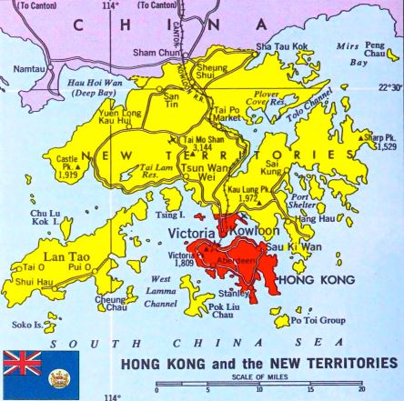

-

Chapter 3: The End and the present day
3.1 The British empire in the 20th century and the dissolution of the empire
New independent countries appeared during the 20th century as the British Empire shrank. The empire's global influence was diminished by World War I, and independence groups emerged during the interwar years. The imperial system's faults were made obvious by World War II, which also saw the emergence of new world powers that threatened the empire's control. Several colonies won their independence after the conflict, oftentimes through violence. The achievement of the British Empire in World War I was distinguished by the sizeable military power and the patriotic enthusiasm of its people. The empire's army, which at the time was the biggest in the world, was crucial in many important battles throughout the conflict, including the Battle of the Somme in 1916. The navy of the empire played an essential part in the war since it governed the oceans and ensured the secure delivery of supplies and troops to the front lines. At the time, the Royal Navy was the biggest in the world, and the empire's status as a superpower was made secure by the Royal Navy's superiority. Similarly outstanding was the British Empire's performance in World War II. The empire significantly aided the Allies' success, and the Axis forces were ultimately defeated thanks to the empire's military and economic might. The military might of the British Empire was again a key element in the conflict, and its navy was essential in securing supply routes and moving troops and supplies around the globe. During the Battle of Britain in 1940, the Royal Air Force (RAF) was particularly important to the war effort. In addition to its military services, the British Empire was critical in obtaining intelligence during the conflict. To help the Allies win the war, the British Government Code and Cipher School in Bletchley Park, England, deciphered the German Enigma code. Even if the empire made contributions to the war effort, there was still some dispute. Conflict arose from the empire's treatment of the colonial populations and their residents throughout the war. Without their agreement, several colonies were drafted into the war effort, and the empire's policies toward native peoples were at times discriminatory. The forced evacuation of Hong Kong during World War II serves as one illustration of this unequal treatment. Japan attacked Hong Kong in December 1941, when it was still a British territory. The province fell to Japanese soldiers in just 18 days after the brief but bloody struggle for Hong Kong. All civilians were supposed to be evacuated by the British government, but many Chinese citizens were left behind and brutally treated by the Japanese. At the end of the war, the British Empire took back the sovereignty of Hong Kong, but its hold on the province was disputed. The economy of the colony, Hong Kong, was vital to the British Empire since it served as a key port for trade with China. But as cries for more democracy and self-determination became stronger, tensions between Hong Kong's Chinese and British inhabitants persisted. The Sino-British Joint Declaration, which was signed by the British and Chinese governments in 1984, stated that Hong Kong would be restored to China in 1997. The British Empire's influence in the area came to an end with Hong Kong's repatriation, which was a pivotal moment in the history of the empire. The British Empire gradually fell apart over several decades. Since the end of World War II, the empire had been in decline, and by the 1960s and 1970s, several of its colonies had already achieved independence. Decolonization was often a chaotic and violent process, and many newly independent countries struggled to establish themselves in the international community. Many of these nations were still dealing with the effects of colonialism, and the scars left by imperialism were still evident decades later. The British Empire's demise signalled the end of an era and had a profound effect on how the world is now. The empire had a huge impact on international events during the 20th century, and its legacy can still be seen today in many regions of the globe. When the British Empire gave Hong Kong back to the Chinese in 1997 the end of the empire was marked. Hong Kong was the last colony the British held on to.
3.2 Current-day British overseas territories
There are 14 regions in the world known as British Overseas Territories that are still ruled by the British government. Although each territory has its distinct history and culture, their ties to the United Kingdom bind them all together. The conflict between the United Kingdom and Argentina over the Falkland Islands is one of the most well-known issues involving the British Overseas Territories. A small collection of islands in the South Atlantic Ocean known as the Falkland Islands have been governed by Britain since 1833. Nevertheless, Argentina also asserts its control over the islands, known as the Malvinas. Conflicts between the two nations, regarding the Falklands War in 1982, have resulted from this disagreement. Argentina occupied the Falkland Islands, which sparked the start of the conflict. The UK retaliated by dispatching a task force to retake the islands. 649 Argentine military troops, 255 British military personnel, and three Falkland Islanders perished during the 74-day conflict. Argentina's surrender brought an end to the conflict, and Britain continued to control the Falkland Islands. The conflict involving the Falkland Islands continues even after the war is done. Tensions between the two nations have remained, as Argentina still asserts its ownership over the islands. For instance, Argentina attempted to obstruct shipping traffic to the Falkland Islands in 2012, which sparked a diplomatic dispute between the two nations. Another long-standing problem involving the British Overseas Territories is the Gibraltar conflict. Spain's southernmost point is where the British Overseas Territory of Gibraltar is situated. Spain has long contested British authority in the area and maintained that it belongs within its borders. Numerous border disputes and naval standoffs between Spanish and British boats have resulted from this disagreement, which has raised tensions between the two nations. For instance, a diplomatic dispute between Spain and Great Britain was sparked in 2013 when a Spanish navy sailed into Gibraltar's territorial waters and fired warning shots at a Royal Navy ship. There are also financial repercussions from the Gibraltar conflict. Gibraltar has a flourishing tourism economy and is a significant hub for offshore finance. To pressure the United Kingdom to give up control of the region, Spain has tried to restrict access to these industries. The other 12 territories include Anguilla, Bermuda, British Antarctic Territory, British Indian Ocean Territory, British Virgin Islands, Cayman Islands, Montserrat, Pitcairn Islands, Saint Helena, Ascension and Tristan da Cunha, South Georgia and the South Sandwich Islands, and Turks and Caicos Islands.